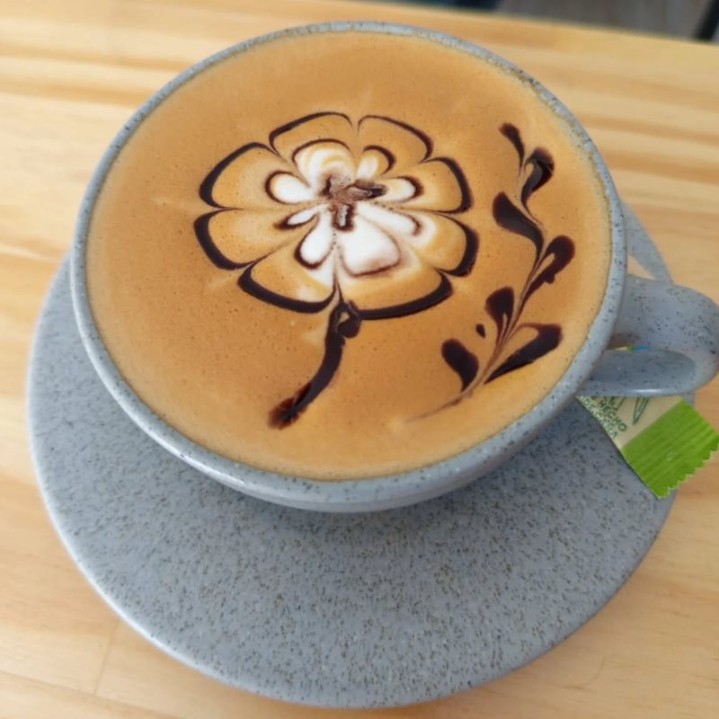
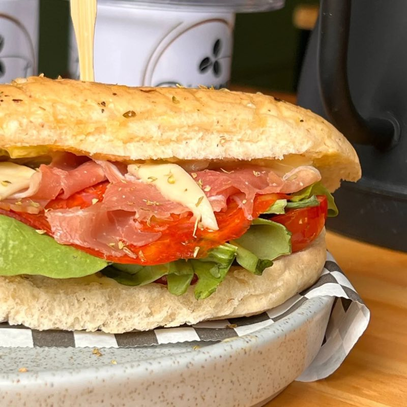
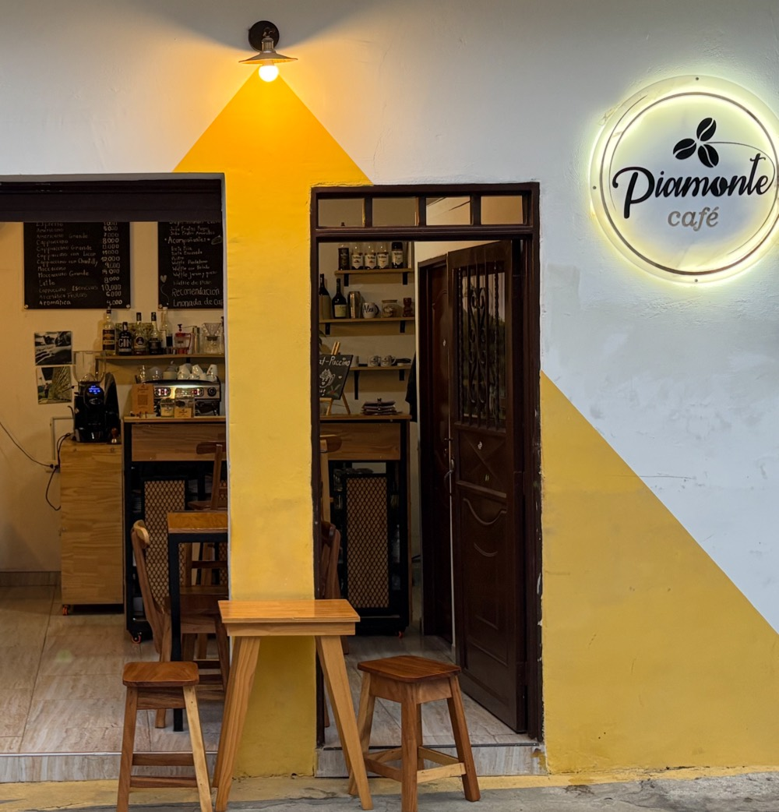

- Abiertos miércoles a domingo · 4 a 10 p. m.
- Domicilios por WhatsApp
- Café de nuestra finca en Dopo
- Pregunta por el postre del día
Una familia caficultora.
En lo profundo de Yotoco nace una pasión que se cultiva grano a grano. Nuestro café viene de nuestra finca Piamonte, en las montañas de Dopo: 8 hectáreas que trabajamos con agricultura limpia, en una tierra única por su suelo, su clima y su agua.
Lo sembramos nosotros mismos y cada grano se cosecha a mano, respetando los tiempos de la naturaleza. Luego lo tostamos y te lo servimos aquí, desde la semilla hasta tu mesa.
- 1Siembra
- 2Cosecha
- 3Tostión
- 4Tu taza
Queremos que cuando vengas no solo tomes café: que sientas la historia de nuestra tierra, el esfuerzo de nuestras familias y el orgullo de Yotoco.
Dicen que un café es un abrazo atrapado en una taza.
Así se ve Piamonte.
Desliza para ver más →
-

Capuchino con arte -

Latte con su galleta -

Sándwich italiano -

Waffles -

Torta de chocolate -

Cerezas de nuestra finca -

Café verde, antes de tostar
Lo que dicen de nosotros.
4,9 en Google · 11 opiniones
-
“Un lugar maravilloso para disfrutar de un buen café. El ambiente es acogedor, el servicio es excelente y se siente la dedicación en cada detalle.”
Isabella B. -
“Un delicioso café y comida, su dueño y colaboradores son muy amables… Recomiendo mucho el lugar para aprender y tomar un café de calidad.”
Luisa A. -
“Un encantador lugar en el centro de Yotoco, ideal para tomar un delicioso café y comida.”
Angélica T. -
“Un lindo y acogedor lugar, donde se puede disfrutar del mejor café.”
Nathaly L.
El café no solo se toma, se vive.
-
Foto pronto
Coffee Party
Catas, música y bebidas a base de café. Una tarde para tus sentidos.
-
Foto pronto
Reuniones
En la mañana o fuera de servicio, te recibimos para reuniones de empresa o de estudio.
-
Foto pronto
Aprende de café
Te contamos cómo se cultiva, se procesa y se prepara.
-
Foto pronto
Café para llevar
El café de nuestra finca, molido o en grano, en bolsas de 250 g y 500 g. También tenemos bonos de regalo.
Síguenos en Instagram.
Lo último de @piamonte.cafe
Te esperamos en Yotoco.

- Horario
- Miércoles a domingo · 4 a 10 p. m.
- Lunes y martes cerrado